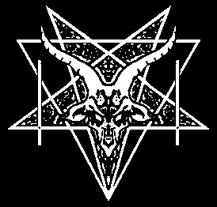
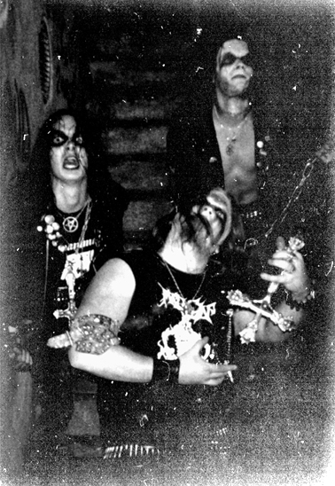
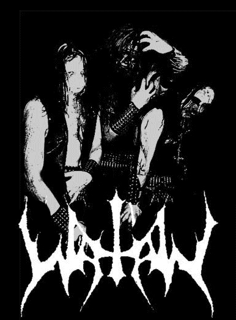

Watain
Watain
Перед тем, как зайти на наш сайт, учтите один факт: Watain не является частью того, что вы понимаете как «underground black metal сцена», которая состоит из разочарованных мнимых элитистов, что со всей самоуверенностью покоятся на том, что стало стандартами и правилами как быть истинными и культовыми во всем этом зрелище. Мы – герольды и слуги высшей силы, одной-единственной и фундаментальной, на которой идеологически основан black metal. Мы – слуги Сатаны. Поддерживая black metal, вы потворствуете всему тому, что ваша собственная плотская тюрьма не приемлет или боится. Посему те, чьи грешные сердца жаждут всего лишь еще раз испытать на себе «грубый underground black metal», должны остановиться. Это не для вас. Мы не властители, у нас нет спеси. Мы – рабы, ползающие в грязи, как вши под Его тенью. И как канцерогенный кокаин глубоко в венах Христа, злотворное проклятие божественному витает во всех нас.
Данное обращение взято с первой версии официального сайта шведской black metal группы Watain. Ее творчество несомненно можно назвать образцом настоящего black metal, а само имя достойно представлять элиту данного направления. Наше мнение полностью основано на разговоре с Эриком (Erik) – одним из участников группы. Все, что сказано этим человеком, известно ему самому как его действительность. Он знает, ради чего и Кого он живет, и Кому его жизнь принадлежит. Имя Дьявола для этого человека священно, поэтому он говорит о Нем ровно столько, сколько можно сказать незнакомому читателю журнала. Это его право. Наше право – относиться к нему с естественной справедливостью, и не иначе.
Мы верим, что слова, выражающее наше отношение к Watain, не привьют им ощущение власти и не отравят их спесью. Ни то ни другое им не принадлежит. У них есть гораздо большее, чему они сами вольны принадлежать душой и сердцем.
CONTRA DEI: Что нового в стане Watain?
Erik: В эти дни мы заняты разжиганием пламени нашего очередного LP. Кроме того, мы дали ряд концертов, и мы продолжим провозглашать Его славу с кафедр отвращения на протяжении всей европейской концертной трассы. Остается добавить, что мы выпустили несколько футболок с нашей символикой и переиздали на кассетах наш дебютный альбом при содействии INCOFFIN PRODUCTIONS.
CD: Что означает black metal для тебя? В чем его предназначение вообще?
E: В том, чтобы славить Повелителя и взращивать семена религиозной реальности в человеческих сердцах. Кто-то мог бы сказать, что Black Metal – это мой способ сочетать мое обаяние и вовлеченность в «омерзительное» и «экстремальное» с моей ролью просвещенного слуги.
CD: В чем цель Watain?
E: Мы – black metal группа. Ответ смотри выше.
CD: Многие музыканты мировой андеграундной black metal сцены зачастую принимают участие в нескольких группах или создают творческие проекты помимо основной деятельности. Можно сказать, что это стало своего рода традицией. Занят ли ты чем-либо вне Watain?
E: Нет никаких проектов. Подобная музыкальная деятельность означает лишь гниение основной группы. Просто посмотри на сцену вокруг себя… Что касается другой деятельности, то я и H. (H. Jonsson) являемся создателями журнала HELLISH MASSACRE, суть которого – извращенное сатанинское бытие чистейшей Тьмы и несчастия. T. (Tore Stjerna) занимается своей студией Necromorbus studio и барабанит в еще одной группе. Но эта группа не имеет ничего общего с просто проектом, а является абсолютно самостоятельной и полноценной. Остается добавить, что я, как и прежде, занимаюсь оформлением буклетов для CD таких групп, как ANTAEUS, PERDITOR, KATHARSIS, MALIGN, OFERMOD и других.
CD: Современные, достаточно известные black metal группы, выросшие в андеграунде и вышедшие из него, в нынешнем своем положении могут донести свои идеи через музыку до гораздо более широкой аудитории. Что ты скажешь на это, как один из участников группы, положение которой с этой точки зрения менее выгодно?
E: Что же, уместность этого момента заключается в честности. Однако, Black/Death Metal, согласно мнению большинства, есть нечто экстремальное. Такой подход облегчает возможность всякому создать группу в этом стиле. Сам посуди, кто же не сможет забросить на час свои обычные дела и свою нормальность и, выворачивая наизнанку свои кишки, верещать о каких-то там противоречиях в жизни под аккомпонимент дисторшированных гитар?
Я хочу сказать, что если группа действительно посвятит себя и свою деятельность, например, Сатанизму, как в случае с WATAIN, то шансы заполучить хорошую сделку с крупным лейблом и широкую аудиторию будут минимальны, если вообще будут возможны. Это объясняет, почему наиболее экстремальные группы, которые, как правило, являются лучшими, по-прежнему находятся в андеграунде, а не среди тех, кто посвятил свои ничтожные жизни деньгам и славе. Однако коммерческая составляющая сцены играет свою не малую роль в инфернальном вихре Black Metal. Как сказал однажды Euronymous: «коммерческие группы поднимут интерес людей к Black Metal. Когда они наскучат и опротивят своим поклонникам, то те станут искать более качественную музыку. Они придут к нам, и мы утащим их гораздо дальше в глубины проклятия».
CD: Твоя оценка современной black metal сцены?
E: Когда я думаю о хорошей, хотя и малочисленной, части сцены, к которой мы принадлежим, я готов сказать, что она стала намного сильнее со времен дней MAYHEM. Но несметное количество групп, не имеющих к ней никакого отношения, играющих лишь для издания своих дерьмовых demo и неспособных даже задуматься о том, к чему приведут их слабые потуги – вот это проблема. Мы полностью отстраняемся от бесконечных life metal групп, превозносящих GRAVELAND и NARGAROTH. Мы не имеем ничего общего с вами. Говоря так, мы смотрим на вас глазами благословенных. Вас просто не существует.
Мы чтим и приветствуем лишь своих братьев: MALIGN, KATHARSIS, FUNERAL MIST, DEATHSPELL OMEGA, ONDSKAPT и остальных рыцарей Сатаны, которые охраняют врата храма Black Metal.
CD: Насилие, убийство, сожжение церквей – это составляющие Black Metal или же это лишь способ выражения своей деструктивности для определенных людей? Это лишь норвежский феномен или же вам это тоже присуще? Почему эти события не получили продолжения?
E: Все, что на благо Повелителю и Его проявлениям – допустимо, имеет это отношение к Black Metal или нет. Всякий, кто заявляет о себе как о принадлежащем к настоящей сцене, должен следовать деструктивными путями жизни, и быть вечно коленопреклоненным перед жертвенным алтарем.
 CD: Какая музыка, кроме Black Metal, тебе может быть интересна? В чем ты
находишь источник вдохновения?
CD: Какая музыка, кроме Black Metal, тебе может быть интересна? В чем ты
находишь источник вдохновения?
E: Мой единственный источник вдохновения – моя религия. Этот источник неисчерпаем.
Есть несколько групп и артистов, которые не имеют отношения к Black Metal, но чья работа для меня ценна. Назову лишь некоторые из них: LEGIONZ OV HELL, FIELDS OF NEPHILIM, DIAMANDA GALAS, ROCKY ERICKSON, JOHNY REBEL, GG ALLIN, SOPOR AETERNUS, GENOCIDE ORGAN.
CD: Ты – сатанист. Но что Сатанизм означает для тебя? В чем его суть?
E: Открой свои глаза, и ты не увидишь Его. Позволь Ему открыть глаза твои, и видеть ты сможешь.
CD: Как ты считаешь, Сатанизм – деструктивен или созидателен, или совмещает в себе одно и другое? Что ты сам разрушаешь, и что создаешь?
E: Сложность самой религии лежит вне человеческого постижения, поэтому ответ на такой неоднозначный вопрос дается веками. Чтобы было проще для приматов, которые будут читать это интервью, скажу лишь то, что внешне Сатанизм может означать объединение с тем, что смертные обычно понимают как негативные аспекты бытия то, что есть Омега.
CD: Кто Сатана для тебя? Можешь ли ты сказать, что ты поклоняешься Сатане?
E: Сатана – мой бог, так же как и ваш, непостижимый и бесконечный, пред которым я преклоняю колени с болезненной гордостью и перед которым вы на коленях в вашей слепоте.
CD: Каким может быть высший дар Сатане? Каков твой дар Ему?
E: Какой же дар может быть достоин Величайшего? Я отдан Ему душой!
CD: На чем должны быть основаны взаимоотношения с Дьяволом? Человек несвободен от многого. Такие оковы, как его эго, видятся ему в числе его достоинств. По сему, меньшее, на что он рассчитывает при взаимодействии с кем-либо, это как минимум то, что оно будет взаимовыгодным обменом (ты мне, я тебе). Какова природа твоих взаимоотношений с Повелителем?
E: То, что я отдал, сравнится по греховности с грехом тысячи людей, которые осыпались пеплом у столбов инквизиции. Этого также достаточно, чтобы исполнить любую возложенную миссию! Это было бы порочно и бессмысленно с моей стороны – продолжать приоткрывать тайны мистерий веры в издании, обозревающем Black Metal (CONTRA DEI абсолютно не является таковым изданием. Ред.). Я уважаю подобный интерес, ибо всякому человеку свойственно погружаться в порочное, но ради чего я должен считать уместным наставлять искателей экстрима тем, что исполнено достоинства и совершенной истины? Ибо храм истины не найти ни на какой карте, пароль от его врат не записан ни в каких манускриптах и его хоралы не слышны даже острейшему слуху! Ключ к мистериям храма, истинный и совершенный катарсис к которому я стремлюсь коленопреклоненный, явлены всякому, кто ищет путь сердцем и душой.
 CD: Твой взгляд на христианство? Это творение самих людей или же влияние
бога?
CD: Твой взгляд на христианство? Это творение самих людей или же влияние
бога?
E: Мне всегда противно читать высказывания Black Metal групп об ужасных деяниях христианства в прошлом, о том, что их предки умирали под ножами христианских палачей и безжалостном огне инквизиции. О том как «религия христиан поработила целую нацию, которая когда-то была свободной». Как все это не может БЫТЬ восхитительным!? И почему я должен ненавидеть христиан? Мои определенные суждения заключены в том, что последний суд над этими проповедниками лжи будет справедливым, и, более того, он будет суров и принесет боль, которая продлится долго. Этого взгляда на современное христианство достаточно, чтобы быть вне масс безмозглых «блэкеров», которые не удосужились и секунду подумать о том, что нынешние христиане куда более истинные грешники, чем сами они. Христианство потеряло свое уважение перед богом, и его кровавые слезы омывают золотой свод небес!
Может, он и всемогущ, но даже всемогущий не может излечить раковую опухоль у себя в груди, которая зародилась в ней однажды. Да здравствуют мучения детей в библейских школах! Да здравствует гнет христианских сект! Да здравствуют слепота и раздвоенные языки «христианских» священников! Да здравствуют одержимые священники, практикующие педофилию! «Gott mit uns!» Все, что может еще напоминать истинное фундаментальное христианство – просто обломки креста, который заплевывается его же предполагаемыми последователями. Они сами сгорят за свои же грехи! Они сгорят! Почтение, покорение и дух заменены материализмом, удовольствием и плотью. В христианстве более нет места богу. Это институт лжи и двуличия. За что же ненавидеть то, что уже не есть добро, а скорее заразный выдох из уст самого Повелителя?
CD: Как ты понимаешь войну против бога?
E: Я вижу ее увенчанной победой.
CD: Что тебе ближе: Порядок или Хаос?
E: Хаос.
CD: Что для тебя есть Хаос?
E: Это то, что не имеет устройства, то, что поглощает в себя. Процесс, обратный творению и беспорядок. Он обращен сам в себе и возвращается к обратному снова. Ибо в Хаосе лежит тот самый порядок, в рамках которого Он изъявляет свою волю и действует.
CD: Как считаешь, что лежит в основе человека – Добро или Зло?
E: Зло.
CD: Что такое Зло, и почему Оно в основе всего?
E: Говоря о человеке в смысле божьей твари, очевидно, что его корни не в разрушительном начале, а наоборот. Но за альфой следует омега, а за падением человека – завоевание его Змеем. Мы вошли во врата, из которых нельзя выйти. Мы – создания бога, но наши души принадлежат Сатане. Мы – обитатели Нода (Nod), забытые и падшие, злобно влекомые навстречу своей погибели.
CD: Боишься ли ты чего-либо/кого-либо? Страх и ужас – болезнь разума, проявление слабости или же это то, что приходит из Тьмы – то, что вне человеческого понимания?
E: Страх и паника – часть Его могущества, от которого должен страдать всякий человек! Я не исключение, но мое понимание этих чувств, возможно, категорически отличается от видения непросвещенных.
CD: Природа человека…Может ли она быть изменена? Может ли человек стать Зверем, Демоном? Кто ты сам?
E: Я верю, что Демоны могут вселяться в человека. Многие люди в своей ничтожной жизни бывали одержимы, и сказать, что я не таков было бы большой ложью.
CD: Black metal и твоего творчества, в частности, достаточно для того, что бы Превозносить Зло и Сражаться во Славу Зла?
Erik: Нет. Но если кто-то способен соединять воедино пламенное посвящение Black/Death Metal движению и религиозным ценностям, то это приемлемо. Именно в этой форме WATAIN будет и впредь скитаться по сцене, раня и заражая, как канцерогенный кокаин в венах Христа!!!
WATAIN C/O Danielsson Stralgatan 41, 4 tr S-112 63 Stockholm SWEDEN |